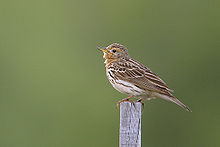
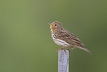

| Red-throated Pipit | |
|---|---|
|  | |
| Conservation status | |
| Binomial name | |
| Anthus cervinus (Pallas, 1811) |
| Red-throated Pipit | |
|---|---|
|  | |
| Conservation status | |
| Binomial name | |
| Anthus cervinus (Pallas, 1811) |
The Red-throated Pipit (Anthus cervinus) is a small passerine bird which breeds in the far north of Europe and Asia, with a foothold in northern Alaska. It is a long-distance migrant moving in winter to Africa, south and east Asia and west coast USA. It is a vagrant to western Europe.
This is a small pipit, with adults easily identified in the breeding season by their brick red face and throat. In other plumages this is an undistinguished looking species, heavily streaked brown above, with whitish mantle stripes, and with black markings on a white background below. Its flight is strong and direct, and it gives a characteristic "psii" call.
The breeding habitat is open country including mountains, marshland and tundra. The nest is on the ground, on a hummock in a marsh, with 4-6 eggs being laid. The Red-throated Pipit is insectivorous, like its relatives, but also eats seeds.

{kind=link}